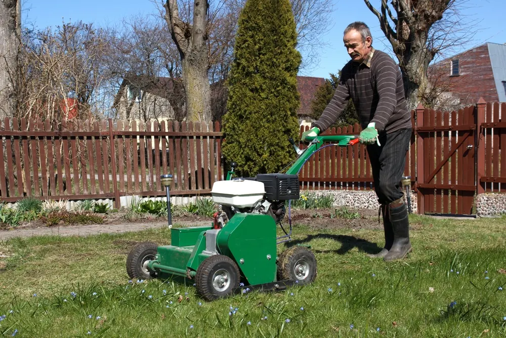

Caring for a lawn can be a daunting task, but it’s important to maintain it properly in order to keep it looking lush and healthy. Aeration and overseeding are two key components of lawn care that help ensure your grass stays vibrant and strong. These simple steps can make a huge difference in the look and feel of your lawn, so it’s important to understand their importance.
Aeration is the process of breaking up compacted soil and allowing air, water, and nutrients to reach deeper into the roots of your grass. It helps create a better environment for growth by improving drainage and preventing water runoff. Overseeding is the process of adding additional grass seed to an existing turf area. This helps thicken the grass, fill in bare spots, improve disease resistance, and more.
When done correctly, aeration and overseeding can make all the difference in the health of your lawn. In this article, we’ll explore why these processes are so important for optimal lawn care, as well as how you can achieve great results when doing them yourself.
Benefits of Aeration and Overseeding
 Aeration and overseeding provide many benefits to lawns. By breaking up compacted soil, aeration helps the roots of grass plants access oxygen, water, and nutrients more easily. This helps them grow more robustly, creating a healthier overall lawn. Overseeding then adds new grass seeds to an existing lawn, filling in any bare spots and giving it a denser appearance. This can improve the color and texture of the turf while also making it less vulnerable to weeds.
Aeration and overseeding provide many benefits to lawns. By breaking up compacted soil, aeration helps the roots of grass plants access oxygen, water, and nutrients more easily. This helps them grow more robustly, creating a healthier overall lawn. Overseeding then adds new grass seeds to an existing lawn, filling in any bare spots and giving it a denser appearance. This can improve the color and texture of the turf while also making it less vulnerable to weeds.
Additionally, regular aeration and overseeding can help reduce water runoff by improving the ability of soil to absorb moisture. By loosening up compacted soil with aeration, water is able to penetrate deeper into the ground instead of running off at the surface. This helps prevent erosion while allowing your grass plants to access more moisture during dry periods.
Finally, both practices help keep your lawn looking its best year-round. Aeration allows air and nutrients to reach deep into the root zone of each plant, encouraging strong growth that can last through all four seasons. Overseeding ensures that any bald patches in your lawn are filled in with healthy grass so you can enjoy a lush green space without having to worry about bare spots or weeds taking over. With these two practices working together, you’ll be sure to have a beautiful lawn all year long!
Reasons Why Lawns Need Aeration and Overseeding
 Aeration and overseeding are crucial for maintaining a healthy, lush lawn. Without them, your grass could become patchy, thin, and vulnerable to weeds. Here are a few reasons why these practices should be part of your regular lawn care routine.
Aeration and overseeding are crucial for maintaining a healthy, lush lawn. Without them, your grass could become patchy, thin, and vulnerable to weeds. Here are a few reasons why these practices should be part of your regular lawn care routine.
First off, aeration helps create space in the soil for roots to grow and access vital nutrients and moisture more easily. This leads to stronger, healthier grass that can withstand harsh weather conditions better than before. Plus, with more oxygen reaching the root zone, you’ll have a richer green color for your entire lawn.
Overseeding is also essential for keeping your turf dense and free of bare spots. By adding new seeds to an existing lawn, you can fill in any gaps while ensuring that the same type of grass continues to grow throughout your yard. In addition, overseeding helps improve drainage by reducing water runoff at the surface level.
In order to keep your lawn looking its best year-round and protect it from pests or disease, regular aeration and overseeding are necessary. With these two practices working together, you can enjoy a beautiful green space with fewer weeds and better drainage – all season long!
Preparations Before Aeration and Overseeding
Before beginning the aeration and overseeding process, there are a few important steps to take in order to ensure success.
- Firstly, it’s crucial to make sure that your lawn is adequately watered prior to aerating and overseeding. This will help create a more hospitable environment for grass seeds to germinate and grow.
- Secondly, you should mow your lawn as short as possible – this will help prevent the new seed from being shaded out by existing grass blades.
- Finally, it’s also important to remove any debris that could potentially interfere with the proper germination of the new seed.
Once these preparations have been taken care of, you can start the process of aerating and overseeding.
Aftercare Tips
Having carried out the process of aerating and overseeding your lawn, it is now important to give the seedlings a chance to grow. To ensure that your lawn flourishes, there are some aftercare tips you should follow.
- To begin with, it is essential to water regularly and deeply. This will help to keep the soil moist and encourage the germination of the seeds.
- Additionally, make sure to avoid excessive foot traffic on newly-seeded areas as this can inhibit growth or lead to bare patches in the grass.
- It’s also important not to mow too early – wait until the grass reaches at least 3 inches high before trimming. This will help ensure that the turf has become firmly rooted in its new home before being exposed to any potential damage from regular mowing activities.
- Keeping your blades sharp and cutting only one-third of the grass length at a time will further reduce any risk of causing damage.
With just a bit of extra care after aeration and overseeding, you can be confident that your lawn will reach its full potential!
Professional Services for Aerating and Overseeding
 If you’re looking for a professional service to help with aerating and overseeding your lawn, there are many options available. A local landscaping company like Big Easy Lawn Care can assist in this area, as they have the knowledge and expertise to ensure that your lawn is properly cared for. They can also advise on the best types of grass seed to use, depending on the climate and soil conditions of your area.
If you’re looking for a professional service to help with aerating and overseeding your lawn, there are many options available. A local landscaping company like Big Easy Lawn Care can assist in this area, as they have the knowledge and expertise to ensure that your lawn is properly cared for. They can also advise on the best types of grass seed to use, depending on the climate and soil conditions of your area.
Another option is to hire a lawn care professional who specializes in aeration and overseeding. These professionals will typically come equipped with the necessary tools and supplies needed to keep your lawn healthy and thriving. Additionally, they can provide advice on how often you should aerate and overseed, as well as any other maintenance tips that may be useful for keeping your lawn looking great.
Conclusion
The key to keeping your lawn healthy and lush is regular aeration and overseeding. It’s important to aerate and overseed your lawn once every two to three years, depending on the condition of your soil. Doing so also has environmental benefits, as it helps reduce runoff and promote water retention in the soil.
When overseeding a lawn in the shade, it’s best to use a grass seed that’s designed for shady areas such as fescue or bluegrass. When selecting a type of grass seed, you should also consider what type of climate you live in and what kind of soil you have on your property.
Finally, it’s possible to aerate and overseed during the winter months if needed. Depending on your local climate conditions, this may be necessary for optimum results. As long as I keep up with regular aeration and overseeding, my lawn will remain healthy and vibrant for years to come. Contact Big Easy Lawn Care today for more information.